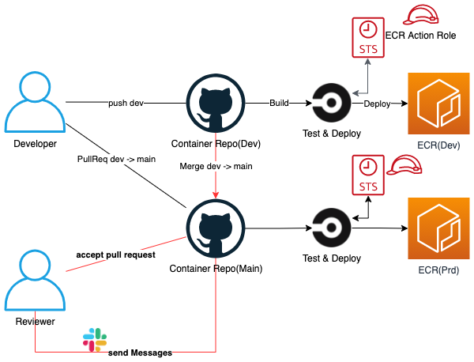

CI/CD Container Model¶
1. Architecture¶
構成は以下の通り.

上の図を解説すると - ブランチはmainとdevの2種類あり, mainブランチをprd(本番)環境相当のブランチとする. - DeveloperとReviwerの2人が存在. DeveloperのPullReqを承認することでMerge. - CircleCI によってコンテナビルド. ECRへPushする場合, AWSの一時的なセキュリティ認証情報を利用してECRへPush.
2. IAM¶
2.1. IAM User 作成¶
- IAMユーザー作成.
cicd-circleci-001 - アクセスキーを作成. アクセスキーとシークレットアクセスキーを保存.
-
IAMポリシー
cicd-policy-assumeRoleCircleCIRole-001を以下のように作成.1{ 2 "Version": "2012-10-17", 3 "Statement": [ 4 { 5 "Effect": "Allow", 6 "Action": "sts:AssumeRole", 7 "Resource": "arn:aws:iam::[account_id]:role/cicd-role-pushContainerImagesToECR-001" 8 } 9 ] 10} -
作成したポリシーをIAMユーザー
cicd-circleci-01にアタッチ.
2.2. IAM Role 作成¶
-
IAM Role
cicd-role-ecrPushImages-001作成. 信頼エンティティをアカウントIDに指定.1{ 2 "Version": "2012-10-17", 3 "Statement": [ 4 { 5 "Effect": "Allow", 6 "Principal": { 7 "AWS": "arn:aws:iam::[account_id]:root" 8 }, 9 "Action": "sts:AssumeRole", 10 "Condition": {} 11 } 12 ] 13} -
IAM Policy
cicd-policy-ecrPushImages-001を作成. ECRにコンテナイメージPushするための権限を付与.1{ 2 "Version": "2012-10-17", 3 "Statement": [ 4 { 5 "Effect": "Allow", 6 "Action": [ 7 "ecr:PutImageScanningConfiguration", 8 "ecr:CompleteLayerUpload", 9 "ecr:UploadLayerPart", 10 "ecr:InitiateLayerUpload", 11 "ecr:BatchCheckLayerAvailability", 12 "ecr:PutImage" 13 ], 14 "Resource": "arn:aws:ecr:[region]:[account_id]:repository/*" 15 }, 16 { 17 "Effect": "Allow", 18 "Action": [ 19 "ecr:GetAuthorizationToken" 20 ], 21 "Resource": "*" 22 } 23 ] 24} -
IAM Role
cicd-role-ecrPushImages-001に IAM Policycicd-policy-ecrPushImages-001をアタッチ.
3. CircleCI¶
-
コンテナリソースを管理するGitHubリポジトリに,
.circleci/config.ymlを作成1version: 2.1 2 3executors: 4 work_container: 5 docker: 6 - image: circleci/node:12.13.1 7 - image: circleci/python:3.8.4 8 9# オーブの設定 10orbs: 11 aws-cli: circleci/aws-cli@1.4.0 12 13commands: 14 set_credential: 15 description: "一時認証セッション取得" 16 parameters: 17 duration_second: 18 description: "セッション保持期間" 19 type: integer 20 default: 3600 21 steps: 22 - run: 23 name: set-credential 24 # 一時認証トークンaws_sts_credentialsを生成して, ECRへログイン.image Push 25 command: | 26 aws_sts_credentials="$(aws sts assume-role \ 27 --role-arn ${AWS_ASSUME_ROLE_ARN} \ 28 --role-session-name "circleci-session" \ 29 --duration-seconds <<parameters.duration_second>> \ 30 --query "Credentials" \ 31 --output "json")" 32 export AWS_ACCESS_KEY_ID="$(echo $aws_sts_credentials | jq -r '.Credentials.AccessKeyId')" 33 export AWS_SECRET_ACCESS_KEY="$(echo $aws_sts_credentials | jq -r '.Credentials.SecretAccessKey')" 34 export AWS_SESSION_TOKEN="$(echo $aws_sts_credentials | jq -r '.Credentials.SessionToken')" 35 ecr_login: 36 description: "ECRログイン" 37 steps: 38 - run: 39 name: ecr_login 40 # ECR ログイン 41 command: | 42 aws ecr get-login-password --region ${AWS_DEFAULT_REGION} | docker login --username AWS --password-stdin ${AWS_ACCOUNT_ID}.dkr.ecr.${AWS_DEFAULT_REGION}.amazonaws.com 43 docker_push: 44 description: "ecrレジストリへpush" 45 steps: 46 - run: 47 name: docker_push 48 # 一時認証トークンaws_sts_credentialsを生成して, ECRへログイン, Push 49 command: | 50 docker build -t ${AWS_ECR_REGISTORY_NAME} . 51 docker tag ${AWS_ECR_REGISTORY_NAME}:latest ${AWS_ACCOUNT_ID}.dkr.ecr.${AWS_DEFAULT_REGION}.amazonaws.com/${AWS_ECR_REGISTORY_NAME}:latest 52 docker push ${AWS_ACCOUNT_ID}.dkr.ecr.${AWS_DEFAULT_REGION}.amazonaws.com/${AWS_ECR_REGISTORY_NAME}:latest 53 54# このプロジェクトで実行するジョブの定義 55jobs: 56 build: 57 executor: work_container 58 steps: 59 - checkout 60 - setup_remote_docker: 61 version: 19.03.13 62 #docker_layer_caching: true 63 - run: 64 name: docker build 65 command: | 66 docker build -t ${AWS_ECR_REGISTORY_NAME} . 67 deploy: 68 executor: work_container 69 steps: 70 - checkout 71 - aws-cli/install 72 - setup_remote_docker: 73 version: 19.03.13 74 #docker_layer_caching: true 75 - set_credential 76 - ecr_login 77 - docker_push 78 79# ジョブの実行順の指定 80workflows: 81 version: 2 82 build-and-deploy: 83 jobs: 84 - build: 85 filters: 86 branches: 87 ignore: 88 - /feature-.*/ 89 - deploy: 90 requires: 91 - build 92 filters: 93 branches: 94 only: 95 - dev # deploy dev registory 96 - prd # deploy prd registory 97 - /hotfix-.*/ # deploy prd registory -
CircleCIコンソールを開き,
All Pipelines > [repository_name] > Environment Variablesを開き, 以下のように環境変数を定義.
| parameter name | value | description |
|---|---|---|
| AWS_ACCESS_KEY_ID | [アクセスキーを入力] | IAMユーザーcicd-circleci-001で発行したアクセスキー |
| AWS_DEFAULT_REGION | ap-northeast-1 | 利用環境を入力 |
| AWS_SECRET_ACCESS_KEY | [シークレットアクセスキーを入力] | IAMユーザーcicd-circleci-001で発行したシークレットアクセスキー |
| AWS_ACCOUNT_ID | [AWSアカウントIDを入力] | AWSアカウントIDを入力 |
| AWS_ASSUME_ROLE_ARN | arn:aws:iam::[account_id]:role/cicd-role-ecrPushImages-001 | 権限委任するIAMロールのArn |
| AWS_ECR_REGISTORY_NAME | webapp-dev-ecr-djangoimage | ECRレジストリ名を記載 |
- AWS_ACCESS_KEY_ID, AWS_SECRET_ACCESS_KEY, AWS_DEFAULT_REGIONはconfig.ymlで定義されていないがAWSCLI用のOrbを利用する場合, 定義する. 詳しくは, circleci/aws-cli@2.0.3
- ECR用のOrbも存在するが, 一時認証用のトークンを利用してECRへLoginするものではないため, 今回はconfig上で表現した